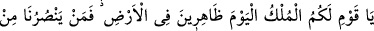
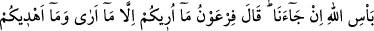
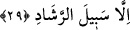
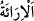

bir müsrif ve kezzâb olsaydı, Allah Teâlâ, ona apaçık dînî delillerin yolunu göstermez
ve onu mûcizelerle desteklemezdi. İkinci yön ise; şayet Mûsâ böyle biriyse Allah onu
yüzüstü bırakıp helâk eder. Dolayısıyla sizin onu öldürmenize gerek kalmaz.
Mümin zat, kendisi Mûsâ’ya inanmasına rağmen muhtemelen hiddetlerini yumuşatmak
maksadıyla kavmine ikinci yönü (yani Mûsâ’nın Allah tarafından helâk edilebileceği
ihtimâlini) göstermek istemiştir. Bir yandan da bu ifadesiyle Firavun’a târiz yapmıştır.
Zira o, hem suçsuz yere çocukları öldüren bir “müsrif” hem de ulûhiyet iddiâsında
bulunan bir “kezzâb” olduğundan Allah Teâlâ, kendisini doğru yola ve kurtuluş çaresine
ulaştırmayacak, aksine rezil ü rüsvâ ederek saltanatını başına yıkacaktır.
29. Ey kavmim! Bugün, yeryüzüne hakim kimseler olarak hükümranlık sizindir.
Ama Allah’ın azabı bize gelip çatarsa, kim bize yardım eder? Firavun: Ben size
kendi görüşümü söylüyorum ve yine size ancak doğru yolu gösteriyorum, dedi.
“Ey kavmim! Bugün yeryüzünde” Mısır diyarında İsrâiloğulları’na “hâkim,”
onlardan üstün ve şu anda hiç kimsenin mukavemet edemeyeceği kadar güçlü “kimseler
olarak hükümranlık” ve saltanat “sizindir.”
“Ama Allah’ın azabı,” yakalaması ve cezalandırması “bize gelip çatarsa, kim bize
yardım eder?” Öyleyse Mûsâ’yı öldürmek suretiyle hükümranlık ve idareciliğinize
fesat bulaştırarak kendinizi Allah’ın azabına maruz bırakmayın! Çünkü O’nun azabı bir
gelecek olursa, hiç kimse bizi kurtaramaz.
Mümin zat, Allah’ın kendilerine nasip ettiği hükümranlık ve Mısır hâkimiyetini
özellikle kavmine nispet etmiştir. Allah’ın azabının gelmesi durumunda ise kendisini de
onların arasına katmıştır. Bunun sebebi, onları üzecek her şeyi savuşturmaya ve onları
sevindirecek her şeyi elde etmelerine yardımcı olmaya çalışan bir dost edâsıyla
gönüllerini kazanıp onların menfaatini düşündüğünü hissettirmektir. Böylece, yaptığı
konuşmanın aslında bizzat kendisiyle de ilgili olduğunu göstermeye ve nasihatinden
etkilenmelerini sağlamaya çalışmaktadır.
Firavun, mümin zatın nasîhatlerini dinledikten sonra sözlü mücâdeleyi bir müddet
bırakarak, Mûsâ’nın öldürülmesine engel olan o mümine ve yanında hazır bulunan
topluluğa: “Ben size kendi görüşümü” bu fitneyi ortadan kaldırmak için doğru
bildiğimi “söylüyorum”, yâni ona işâret ediyorum. “Ben” bu görüşümle “yine size
ancak doğru yolu gösteriyorum, dedi.”
Âyetteki “__WORD__ fiili, “re’y” kökünden gelmektedir. Biri, bir şey hakkında belli bir